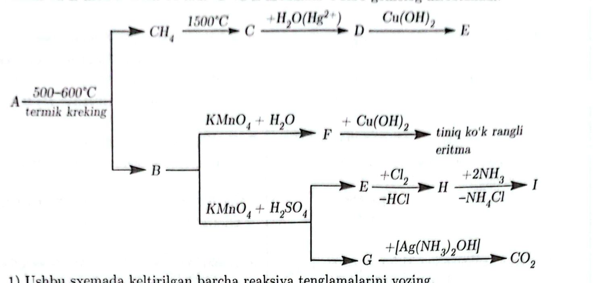

| № | 1-idish | 2-idish | 3-idish | 4-idish |
|---|---|---|---|---|
| 1. | kraxmal | oqsil | atsetaldegid | glitserin |
| 2. | oqsil | glitserin | kraxmal | atsetaldegid |
| 3. | oqsil | kraxmal | atsetaldegid | glitserin |
| 4. | kraxmal | oqsil | glitserin | atsetaldegid |
| reaktiv | 1 | 2 | 3 |
|---|---|---|---|
| H2SO4(kons.) | o‘zgarish kuzatilmadi | gaz ajralib, eritma rangi o‘zgardi | gaz ajraldi |
| CaCl2/H2O | cho‘kma ajraldi | o‘zgarish kuzatilmadi | cho‘kma ajraldi |
36. Katalizator ishtirokida reaksiyaga teng massali ammiak va kislorod gazi aralashmasi kiritiladi. Reaksiya oxirigacha sodir bo‘lgandan keyin sistema normal sharoitga qaytarildi. Reaksiyadan keyin idishdagi gaz aralashmasining massasi 53 grammni tashkil etdi. Yakuniy gaz aralashmasida ortib qolgan moddaning massasini (grammda) hisoblang.
Javob:
37. 200 ml 2M li kumush nitrat eritmasi teng massali mis elektrodlar yordamida 0,65 F tok bilan elektroliz qilindi. Oxirgi elektrodlar massasi necha grammga farq qiladi?
Javob:
38. Fe metalidan yasalgan plastinka 200 gramm 16% li CuSO4 eritmasiga solindi. Reaksiya jarayonida barcha Cu2+ ionlari qaytarildi. Qolgan barcha metall plastinkani oksidlash uchun eritmaga yana 400 gramm 32% li CuSO4 eritmasi qo‘shilishi kerak. Eritmaga solingan temir plastinkaning umumiy massasini toping.
Javob:
39. Metan, etin va etandan iborat aralashmani to‘liq gidrogenlash uchun sarflangan vodorod hajmi aralashma hajmiga teng. Xuddi shunday aralashmani yoqish uchun sarflangan kislorod hajmi aralashma hajmidan 2,55 marta ko‘p. Dastlabki gazlar aralashmasidagi φ(CH4) ni aniqlang.
Javob:
40. Formaldegid, chumoli kislota va sirka kislotadan iborat 30 g aralashmani neytrallash uchun 12,8 g sof natriy gidroksid sarflandi. Olingan eritmaga mo‘l miqdordagi kumush oksidining ammiakdagi eritmasi qo‘shilganda 2,6 mol cho‘kma ajraldi. Dastlabki aralashmadagi chumoli kislotaning massa ulushini (%) hisoblang.
Javob:
41. Ekvimolyar nisbatdagi oq fosfor (P4) va X oddiy modda aralashmasida ma’lum miqdor rux bor. Aralashma mo‘l miqdordagi qaynoq kaliy gidroksid eritmasi bilan ishlanganda 2,4 g qattiq qoldiq qoldi va o‘rtacha molyar massasi 10 g/mol bo‘lgan 17,92 litr (n.sh.) gazlar aralashmasi hosil bo‘ldi.
1) Dastlabki aralashma massasini (g) hisoblang.
2) Sarflangan ishqor miqdorini (mol) aniqlang.
3) Hosil bo‘lgan eritmadagi tuzlarning massalari (g) yig‘indisini hisoblang.
4) Dastlabki aralashma mo‘l miqdordagi konsentrlangan sulfat kislota eritmasida eritilsa, qancha (mol) gaz ajraladi?
5) Dastlabki aralashma mo‘l miqdordagi suyultirilgan nitrat kislota eritmasida eritilsa, qancha (mol) gaz ajraladi?
42. A, B, C, D, E, F, G, H, I – organik moddalar. A moddaning termik krekingida faqat metan va B modda hosil bo‘ladi. G va E moddalar o‘zaro gomolog hisoblanadi.

43. Rangsiz A gaz kaliy gipoxlorit bilan oksidlanib, havoda tutaydigan rangsiz B suyuqlikni hosil qiladi (1-reaksiya). B moddaning beqaror C kislota bilan reaksiyasidan keskin portlovchi D suyuqlik hosil bo‘ladi (2-reaksiya). D moddaning parchalanishidan suvda oz eriydigan E va F gazlar 3:1 mol nisbatda hosil bo‘ladi (3-reaksiya). Aralashmaning vodorodga nisbatan zichligi 10,75. Agar E va F gazlarni 1:3 mol nisbatda (vodorodga nisbatan zichligi 4,25) olib yuqori bosim va haroratda platina katalizatori ishtirokida A gazini sintez qilish mumkin (4-reaksiya). A moddaning konsentrlangan suvli eritmasini G oddiy moddaning sarg‘ish-qizil eritmasi bilan aralashtirib E gaz va H tuzning rangsiz eritmasini olish mumkin (5-reaksiya). A – H moddalarni aniqlab, quyidagilarni yozing.
1) 1-reaksiya tenglamasini tenglashtirilgan holda yozing.
2) 2-reaksiya tenglamasini tenglashtirilgan holda yozing.
3) 3-reaksiya tenglamasini tenglashtirilgan holda yozing.
4) 4-reaksiya tenglamasini tenglashtirilgan holda yozing.
5) 5-reaksiya tenglamasini tenglashtirilgan holda yozing.